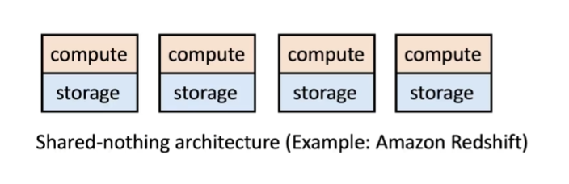
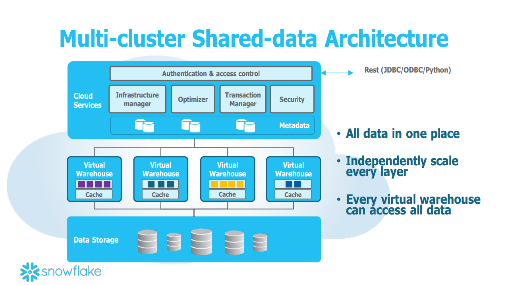

Snowflake❄
Snowflake：一个革命性的云数据平台
1. 什么是Snowflake？
Snowflake是一种云数据仓库，它提供了一个全面的、基于SQL的数据分析解决方案。Snowflake以其独特的架构和优秀的性能，赢得了许多企业的青睐。它的设计理念是将计算和存储分离，使得用户可以独立地调整这两个方面，以满足自身的需求。
2. Snowflake的特点
2.1 传统数仓 - 计算与存储耦合

传统数据仓库通常采用的是计算和存储耦合的架构(Shared-nothing Architecture)。在这种架构中，每个节点都有自己的计算资源和存储空间，数据被横向分布在各个节点上。计算过程中，每个节点只需处理其自身存储的数据。
这种架构的优点在于理论上速度很快，因为它减少了数据在各节点间的传输时间，并且在数据处理过程中不会出现资源争抢的情况。然而，这种架构也有一些明显的缺点，包括：
- 数据分布不均匀，因为数据需要预先分配到各个节点，而每个节点只处理其自身的数据；
- 节点的增加或减少操作相当复杂，因为大量数据需要重新分配；
- 无法单独增加计算资源或存储资源，因为计算和存储是耦合的。这意味着，当增加存储资源时，也会增加计算资源，但这些计算资源可能并不需要。
2.2 Snowflake - 计算与存储分离

为了应对传统数据仓库的挑战，Snowflake引入了一种新的架构，即计算和存储的分离架构(Shared-data Architecture)。在这一架构中，存储层只负责数据的存储，而计算层则专注于数据的计算。在每次计算过程中，计算节点会从存储层均匀地获取数据，然后在节点内部完成计算。
这种架构允许用户自由地增加或减少计算资源和存储空间。计算层是Shared-nothing的Virtual Warehouse，由EC2的Cluster组成，每个EC2为一个Worker Node，包含本地的Local Disk作为Table Data Cache。如果Query很复杂，可以选择增加每个Virtual Warehouse的计算节点的数量；如果并发性很重要，那就可以选择增加Virtual Warehouse的数量。当使用完毕后，可以关闭所有的Virtual Warehouse，这样只需要为存储空间付费，而不需要为计算资源付费。
存储层是Amazon S3(目前也支持Microsoft Azure 和Google Cloud Platform)，它可以被视为具有无限容量、数据不会丢失且成本超低的存储解决方案。
微软对Snowflake的支持，首先，微软的云服务业务模型主要依赖规模来吸引消费。因此，尽管从某种程度上来说，支持Snowflake可能会冲击微软自家的数据服务，但是，如果Snowflake的用户选择将数据存储在Azure上，那么这对微软来说就是有利的。这种策略的核心就是，无论客户选择使用什么样的解决方案，只要他们的数据在微软的掌控之下，微软就会提供支持。 其次，未来的趋势是多云，也就是说，企业会选择将数据和服务分布在多个云平台上，以降低技术和商业风险。在这种情况下，易于迁移就变得尤为重要。如果微软只是防守自家的领地，那么客户就无法从AWS轻松转移到Azure。相反，如果微软提供了在Azure上运行Snowflake的解决方案，那么就为AWS的客户提供了一个转换的机会。这个观点可以通过观察Snowflake最近一轮由Salesforce领投的融资情况得到验证，这进一步证明了数据共享战略的重要性。 最后，从战略角度来看，微软不仅要培养良好的合作伙伴，也需要培养强大的竞争对手。比如，Azure Databricks就是一个很好的例子。尽管许多人误以为Databricks是微软的产品，但实际上，Azure Databricks已经成为了Azure的一线服务。云计算的目标是让客户得到最大的便利，如果有优秀的技术，那么平台应当吸引并支持这些技术的使用。
2.3 性能优化
尽管Snowflake解决了传统数据仓库的一些关键问题，但是传统数据仓库的优势——性能，却是Snowflake的短板。为了优化性能，Snowflake进行了以下几项工作：
- Local Caching： 每个节点都会保存一些常用的数据在本地的硬盘上，这些数据相当于cache，查询时会按照LRU的方法逐渐替换掉local cache中的data。在分配任务时，服务层会采用一次性Hash的方法给每个节点分配任务，尽可能地增加cache hit rate，从而减少计算层和存储层之间的传输，从而加快处理速度。
- File Stealing： 假设存在两个计算节点，每个节点都被赋予了三个文件的处理任务。节点1迅速完成了其三个文件的处理，而节点2还未开始处理任何文件。在这种情况下，如果得到节点2的许可，节点1可以将节点2的一个文件的所有权转移到自己身上。这样，处理速度较快的节点1就能处理更多的文件，而处理速度较慢的节点2的负载则相应减轻，从而达到整体的加速效果。
- Storage： 第三个优化策略关注于存储层的优化。所有的表格文件在存储时会被水平地切分成n个部分，每一部分采用列式存储的方式，并存储在Amazon S3中。此外，每一个文件块都会有一个header信息，用于记录每一列的存储位置（offset）。这些文件块的信息都会被记录在服务层。当用户发出一个查询请求时，服务层可以根据该查询请求精确地找出所需数据在存储层的位置，从而避免了无用的内容读取，实现了加速效果。
3. 总结
Snowflake是一个强大的云数据平台，它提供了一种简单，高效，灵活的方式来处理和分析数据。无论你是一个小型团队，还是一个大型企业，Snowflake都能够满足你的需求。
未完。。。
参考资料：
[1]Dageville, Benoît, Cruanes T , Zukowski M ,et al.The Snowflake Elastic Data Warehouse.[C]//ACM.ACM, 2016.DOI:10.1145/2882903.2903741.
https://www.bilibili.com/video/BV1oK41137AX
https://zhuanlan.zhihu.com/p/54439354
https://zhuanlan.zhihu.com/p/594213354
https://developer.aliyun.com/article/789944
https://zhuanlan.zhihu.com/p/366369705
https://www-conf.slac.stanford.edu/xldb2016/talks/published/Tues_7_Marcin_Z_XLDB-2016-05-24-release.pdf